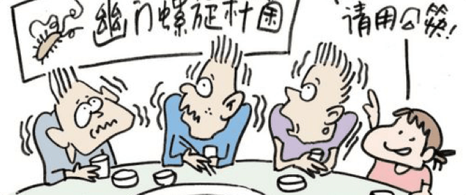

什么是幽门螺旋杆菌
幽门螺旋杆菌是一种螺旋形、微厌氧、对生长条件要求十分苛刻的革兰氏阴性杆菌。
幽门螺旋杆菌得传播方式
Hp 的传播途径有粪-口、口-口、密切接触和动物源性等，感染有家族聚集现象。
饮用受污染的水，感染Hp 的人与家人的密切接触、共餐，幼儿园、学校里儿童、学生之间的接触及吃路边摊位的不洁食品等，均可引起Hp 的传播。
人体受Hp 感染后，病菌会长期潜伏在胃内，可无任何症状，有些患者会出现反复发作性腹痛、呕吐、缺铁性贫血、慢性胃炎、十二指肠溃疡等。
幽门螺旋杆菌的诊断方法
目前推荐符合下述三项当中的任意一项均可诊断为 H.pylori 感染：
1.胃粘膜组织快速尿素酶试验（RUT）、组织切片染色或培养三项中任意一项为阳性；
2.13C 或 14C 尿素呼气试验（UBT）阳性；
3.粪便 H.pylori 抗原检测（HpSA）阳性，血清 H.pylori 抗体检测阳性提示曾经感染，从未治疗者可视为现症感染。